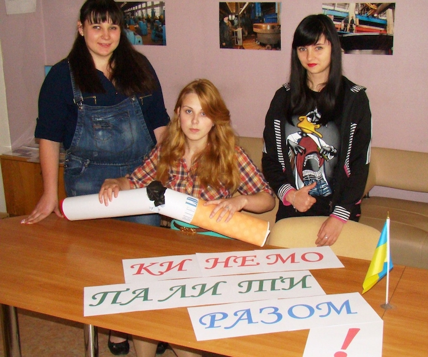
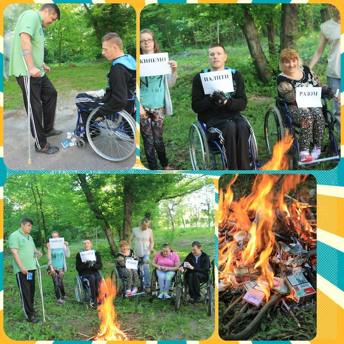
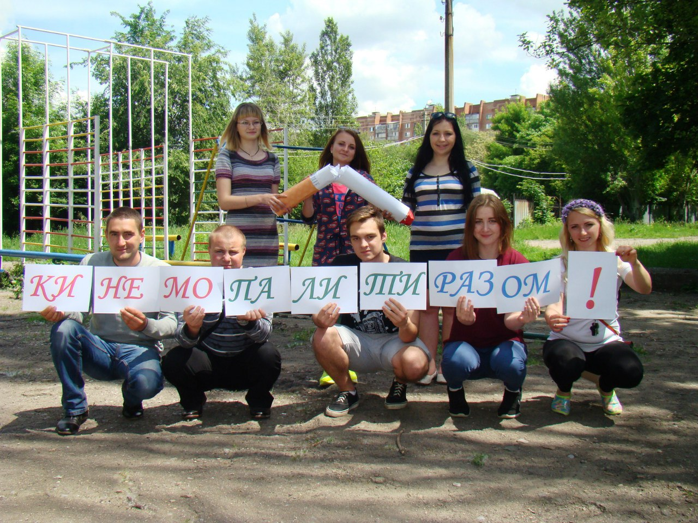

NGO "Quit Smoking Together"
"Quit Smoking Together" is a non-government initiative founded in 2012, right after the publication of the eponymous book by Aleksei Koval describing his method of fighting nicotine addiction for “difficult cases”—the people who lost their last hope.
The organization’s main goal is to prevent juvenile smoking, alcoholism, and drug addiction both among adults and children and to help people wishing to get rid of the addiction. It is also aimed at the promotion of healthy lifestyle and strengthening of the legislative initiative and state supervision over statutory compliance in the anti-smoking efforts.
As a non-government initiative, we have been actively promoting a healthy lifestyle and helping people of all kinds struggling with tobacco, alcohol and drug addiction. We conducted thousands of campaigns, dozens of roundtables, and several tours around Ukraine to promote a healthy lifestyle and quitting nicotine, alcohol and drug abuse. For reports about these events, visit our website www.quitsmokingtogether.org
Over these years, we received more than a thousand thank-you letters. In 2017, an NGO was registered to push for legislative changes in the Ukrainian tobacco control field and conducting international activities.
Background
In 2012, Aleksei Koval—the author of the book Quit Smoking Together—published his first developments about getting rid of nicotine addiction.
The author worked on the book for over three years. The first chapters were published and shared on the Internet. Communicating with readers and answering questions from people who wanted to stop smoking, the author kept improving the book, turning it into an all-in-one guide for all types of addictions. In 2012, the first printed edition of "Quit Smoking Together" came out. Soon, a social movement sprang up around it under the leadership of Aleksei Koval—by that time, the movement united over 300 people in all regions of Ukraine.
The movement council decided to hold weekly campaigns funded by the author and the volunteers to fight smoking, alcohol, and drug addiction. They gave away Aleksei Koval’s books "Quit Smoking Together", CDs with the e-book, brochures, and leaflets with the initiative’s website URL and the link to a free download of the book.
Thematic roundtables were held in major cities of Ukraine. In over 40 cities, tours were held to raise awareness of the problem, make the healthy lifestyle promotion as effective as possible and help Ukrainians fight the additions.
Over the several years of the initiative’s operation, thousands of people from different countries have joined us.
In 2014, Aleksei Koval’s Facebook profile was friended 5,000 times, and the "Quit Smoking Together" VK group had over 64,000 members. Our simple events involved air dolls of cigarettes, bottles, and syringes and always drew people’s attention. The text in our brochures and handouts made people contemplate quitting smoking and alcohol in about 10–15 % of cases. 
Promoting healthy lifestyle and giving out thousands of free online versions of "Quit Smoking Together", we not only raised awareness of the problem but also helped people quit. People kept writing to us, asking for help and thanking for our work and the book. It didn’t just help thousands of people from Ukraine, Russia, Belarus, and other countries quit smoking—many of them also managed to overcome alcohol and drug addiction.
The author’s unique method preparing people to quit smoking at once accompanies them for the first few weeks and helps understand the value of freedom, health, and lifetime, they can win by getting rid of addictions.
Aleksei Koval’s book is popular in Ukraine and across the CIS. The author is unselfish and wants to help everyone—the book may be downloaded from many websites free of charge. Over 1,000,000 electronic copies are circulating worldwide now. Paper copies can be found in Ukrainian public and private libraries too.
Today
Presently, an app Android and iOS is being developed to make the book even more accessible. It will be available on Google Play and App Store for free in three languages—English, Russian, and Ukrainian. The book is also being translated into 15 more languages, and, provided the funding, these translations will be ready by 2020.
The author is also to finish his second book. It is about fighting another global problem—children’s smoking and alcoholism.
In August 2017, members of the initiative had a meeting and decided to register the Quit Smoking Together as an international NGO. In September 2017, they did it, and now Quit Smoking Together is officially registered with the Ministry of Justice of Ukraine. Currently, there are representatives of the NGO in 8 regions of Ukraine, and tens of thousands of its members are living in five different countries.
Future
At the 2017 meeting, the following objectives were set for 2018–2020:
- to make the government tighten the measures on passive smoking
- to allocate mandatory hours at schools to cover problems of tobacco, alcohol and drug addiction in detail; to prepare teenagers for the first offer to smoke, drink alcohol or take a drug. A teenager must be ready for this and know why the only possible answer is “no.”
- to push for the ban on smoking hookah in public places since it openly advertises passive smoking
- to promote a healthy lifestyle and properly inform consumers about the dangers of active and passive smoking, and other forms of tobacco use
- to ensure the protection of rights of a man who do not smoke from tobacco smoke exposure
- to provide assistance to the willing to quit in anti-smoking centers, online aid through the website, possibility to participate in seminars or consultations, and talk with a psychologist by phone
- to provide assistance in activities aimed at combating illicit traffic of tobacco products by helping legislators and conducting anti-smoking campaigns
- to conduct campaigns, including those involving mass media, aimed at reducing the tobacco products consumption; to promote a healthy lifestyle among parents, pregnant women, adolescents, healthcare and education professionals, employees of social services and other institutions; to enroll those wishing to quit smoking into help programmes
- to introduce an efficient national anti-tobacco legislation in Ukraine, to conduct denormalization of smoking, and to promote tobacco-free life.